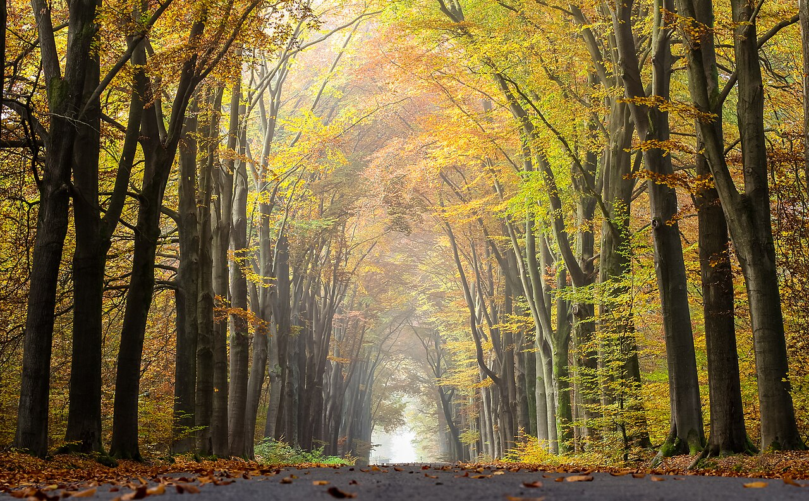
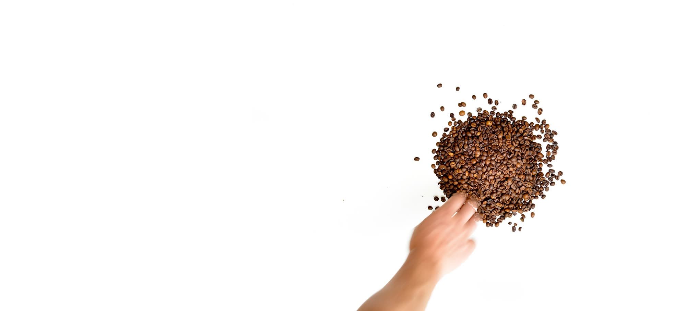

Small
€0.02 / min
2 cores · 4 GB memory
Unit tests and small builds
Request a small runnerTrestle shows all five jobs on one clock. The browser tests finish last in this 4-minute, 12-second run.
View the run on its pageA single slow run can distort the average. Trestle keeps the middle and the tail together.
4:46
Median
6:36
90th percentile
7:42
Longest run
Open the test that stopped the run. The expected value stays beside the value the browser returned.
Example · checkout / delivery.spec.ts
const day = delivery.day
expect(day).toBe(
"Friday"
)
Expected Friday
Received Monday
at delivery.spec.ts:48Both runners keep logs for 30 days. Compute time is billed by the minute.
€0.02 / min
2 cores · 4 GB memory
Unit tests and small builds
Request a small runner€0.08 / min
8 cores · 16 GB memory
Browser suites and parallel builds
Request a large runnerHow Trestle reads a repository, stores logs and handles a stopped build.
Connect one repository with read access to its source and write access to its build status.
Queued jobs leave the queue immediately. Running jobs stop at the next process check.
Download the plain-text log from the run while it is within the 30-day retention period.
Footnote keeps your route, distance and field notes together when the signal drops.
Example walk · Quarry Ridge
Three entries from one walk, in the order they were recorded.
The track climbs beyond the stone gate.
Wet leaves cover the turn just below the ridge.
The view opens to the south at the second stile.
Keep a short route on hand for the first frost, a clear autumn afternoon or a day under cloud.



Save the part of your notebook you need for the next walk.
Open the path in your mapping app.
Print the route and the notes in walking order.
Keep a searchable copy of every entry.
From the example notebook for Quarry Ridge.
“At the fork above the quarry, take the grass path. The gravel track ends at a locked gate.”
The diffuser faces the light. The dial pairs a usable shutter speed with your chosen aperture.
At ISO 100, each pair admits the same amount of light. Choose the depth of field or motion blur you want.
| Aperture | Shutter | Use |
|---|---|---|
| f/4 | 1/250 s | Moving subject |
| f/5.6 | 1/125 s | Handheld portrait |
| f/8 | 1/60 s | Still subject |
| f/11 | 1/30 s | Tripod |
Three moves take you from incoming light to a camera setting.
Hold the white diffuser at the subject, facing the camera.
Press once. The meter holds the exposure value while you move.
Turn the dial to pair your aperture with a shutter speed.
Everything supplied with the S1, with sizes for the parts you may want to replace.
Incident readings measure the light falling on a subject. A reflected reading follows the surface you point at.


Choose your cup at Birchroom. Filter changes with the morning batch.



Our house filter, brewed at the counter each morning.
We stop this roast while the acidity is still clear. In the cup it tastes of plum as it cools, with a little cocoa at the end.
At home, start with 16 grams of coffee and 250 grams of water. Grind a little finer if the cup tastes thin.
Small tastings take place before lunch. Seats are first come, first served.

Two brewers, one coffee
Taste the same lot at two roast levels
Try three shots at different grind settings
Short field notes on picking coffee, brewing it and tasting the difference.
At the sorting table
Three sample batches
At the filter bar
At eight we grind the first filter batch. By ten the hand brewer is out for anyone who wants a single cup.